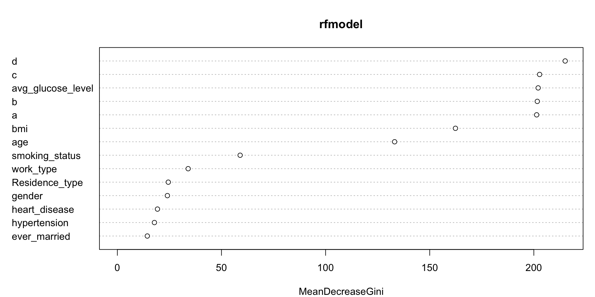

Hackathon
Swapnil
Hackathon
This is a code for an online hackathon to predict likelihood of someone suffering from stroke. Various algorithms are used to get predictions. Since the time was limited, the documentation in this code is sloppy.
library(tidyverse)
library(data.table)
library(verification)
library(randomForest)
library(nnet)
library(caret)
library(gbm)
library(xgboost)
library(MatrixModels)
library(Matrix)
library(MASS)
library(neuralnet)
library('h2o')
h2o.init(ip='localhost',port=54321,max_mem_size = '2600m')## Connection successful!
##
## R is connected to the H2O cluster:
## H2O cluster uptime: 9 minutes 35 seconds
## H2O cluster timezone: America/Los_Angeles
## H2O data parsing timezone: UTC
## H2O cluster version: 3.26.0.2
## H2O cluster version age: 15 days
## H2O cluster name: H2O_started_from_R_Swapnil_gmu724
## H2O cluster total nodes: 1
## H2O cluster total memory: 2.25 GB
## H2O cluster total cores: 4
## H2O cluster allowed cores: 4
## H2O cluster healthy: TRUE
## H2O Connection ip: localhost
## H2O Connection port: 54321
## H2O Connection proxy: NA
## H2O Internal Security: FALSE
## H2O API Extensions: Amazon S3, XGBoost, Algos, AutoML, Core V3, Core V4
## R Version: R version 3.4.3 (2017-11-30)dim(train)## [1] 43400 12str(train)## Classes 'data.table' and 'data.frame': 43400 obs. of 12 variables:
## $ id : int 30669 30468 16523 56543 46136 32257 52800 41413 15266 28674 ...
## $ gender : chr "Male" "Male" "Female" "Female" ...
## $ age : num 3 58 8 70 14 47 52 75 32 74 ...
## $ hypertension : int 0 1 0 0 0 0 0 0 0 1 ...
## $ heart_disease : int 0 0 0 0 0 0 0 1 0 0 ...
## $ ever_married : chr "No" "Yes" "No" "Yes" ...
## $ work_type : chr "children" "Private" "Private" "Private" ...
## $ Residence_type : chr "Rural" "Urban" "Urban" "Rural" ...
## $ avg_glucose_level: num 95.1 88 110.9 69 161.3 ...
## $ bmi : num 18 39.2 17.6 35.9 19.1 50.1 17.7 27 32.3 54.6 ...
## $ smoking_status : chr "" "never smoked" "" "formerly smoked" ...
## $ stroke : int 0 0 0 0 0 0 0 0 0 0 ...
## - attr(*, ".internal.selfref")=<externalptr>## Formattin##
train$gender<-as.factor(train$gender)
train$ever_married<-as.factor(train$ever_married)
train$work_type<-as.factor(train$work_type)
train$Residence_type<-as.factor(train$Residence_type)
#train$smoking_status<-as.factor(train$smoking_status)
train$hypertension<-as.factor(train$hypertension)
train$heart_disease<-as.factor(train$heart_disease)
train$stroke<-as.factor(train$stroke)
summary(train)## id gender age hypertension heart_disease
## Min. : 1 Female:25665 Min. : 0.08 0:39339 0:41338
## 1st Qu.:18038 Male :17724 1st Qu.:24.00 1: 4061 1: 2062
## Median :36352 Other : 11 Median :44.00
## Mean :36326 Mean :42.22
## 3rd Qu.:54514 3rd Qu.:60.00
## Max. :72943 Max. :82.00
##
## ever_married work_type Residence_type avg_glucose_level
## No :15462 children : 6156 Rural:21644 Min. : 55.00
## Yes:27938 Govt_job : 5440 Urban:21756 1st Qu.: 77.54
## Never_worked : 177 Median : 91.58
## Private :24834 Mean :104.48
## Self-employed: 6793 3rd Qu.:112.07
## Max. :291.05
##
## bmi smoking_status stroke
## Min. :10.10 Length:43400 0:42617
## 1st Qu.:23.20 Class :character 1: 783
## Median :27.70 Mode :character
## Mean :28.61
## 3rd Qu.:32.90
## Max. :97.60
## NA's :1462colSums(is.na(train))## id gender age hypertension
## 0 0 0 0
## heart_disease ever_married work_type Residence_type
## 0 0 0 0
## avg_glucose_level bmi smoking_status stroke
## 0 1462 0 0## Test##
str(test)## Classes 'data.table' and 'data.frame': 18601 obs. of 11 variables:
## $ id : int 36306 61829 14152 12997 40801 9348 51550 60512 31309 39199 ...
## $ gender : chr "Male" "Female" "Female" "Male" ...
## $ age : num 80 74 14 28 63 66 49 46 75 75 ...
## $ hypertension : int 0 0 0 0 0 1 0 0 0 0 ...
## $ heart_disease : int 0 1 0 0 0 0 0 0 0 0 ...
## $ ever_married : chr "Yes" "Yes" "No" "No" ...
## $ work_type : chr "Private" "Self-employed" "children" "Private" ...
## $ Residence_type : chr "Urban" "Rural" "Rural" "Urban" ...
## $ avg_glucose_level: num 83.8 179.5 95.2 94.8 83.6 ...
## $ bmi : num 21.1 26 21.2 23.4 27.6 32.2 25.1 32.5 28 25.7 ...
## $ smoking_status : chr "formerly smoked" "formerly smoked" "" "" ...
## - attr(*, ".internal.selfref")=<externalptr>test$gender<-as.factor(test$gender)
test$ever_married<-as.factor(test$ever_married)
test$work_type<-as.factor(test$work_type)
test$Residence_type<-as.factor(test$Residence_type)
#train$smoking_status<-as.factor(train$smoking_status)
test$hypertension<-as.factor(test$hypertension)
test$heart_disease<-as.factor(test$heart_disease)
summary(test)## id gender age hypertension heart_disease
## Min. : 2 Female:10957 Min. : 0.08 0:16868 0:17707
## 1st Qu.:18542 Male : 7642 1st Qu.:24.00 1: 1733 1: 894
## Median :36717 Other : 2 Median :43.00
## Mean :36747 Mean :42.06
## 3rd Qu.:55114 3rd Qu.:60.00
## Max. :72942 Max. :82.00
##
## ever_married work_type Residence_type avg_glucose_level
## No : 6662 children : 2613 Rural:9291 Min. : 55.00
## Yes:11939 Govt_job : 2302 Urban:9310 1st Qu.: 77.55
## Never_worked : 75 Median : 91.83
## Private :10750 Mean :104.39
## Self-employed: 2861 3rd Qu.:112.31
## Max. :275.72
##
## bmi smoking_status
## Min. :10.20 Length:18601
## 1st Qu.:23.30 Class :character
## Median :27.70 Mode :character
## Mean :28.55
## 3rd Qu.:32.80
## Max. :88.30
## NA's :591colSums(is.na(test))## id gender age hypertension
## 0 0 0 0
## heart_disease ever_married work_type Residence_type
## 0 0 0 0
## avg_glucose_level bmi smoking_status
## 0 591 0testBmi<-test%>%filter(!is.na(bmi))%>%
group_by(work_type)%>%
summarise(med=median(bmi))
testBmi## # A tibble: 5 x 2
## work_type med
## <fct> <dbl>
## 1 children 18.7
## 2 Govt_job 29.5
## 3 Never_worked 24.4
## 4 Private 28.7
## 5 Self-employed 29.2bmiCommplete<-test[!is.na(test$bmi),c(7,10)]
test$bmi[is.na(test$bmi) & test$work_type=='children'] <- 18.7
test$bmi[is.na(test$bmi) & test$work_type=='Govt_job'] <- 29.50
test$bmi[is.na(test$bmi) & test$work_type=='Never_worked'] <- 24.40
test$bmi[is.na(test$bmi) & test$work_type=='Private'] <- 28.70
test$bmi[is.na(test$bmi) & test$work_type=='Self-employed'] <- 29.20
summary(test)## id gender age hypertension heart_disease
## Min. : 2 Female:10957 Min. : 0.08 0:16868 0:17707
## 1st Qu.:18542 Male : 7642 1st Qu.:24.00 1: 1733 1: 894
## Median :36717 Other : 2 Median :43.00
## Mean :36747 Mean :42.06
## 3rd Qu.:55114 3rd Qu.:60.00
## Max. :72942 Max. :82.00
## ever_married work_type Residence_type avg_glucose_level
## No : 6662 children : 2613 Rural:9291 Min. : 55.00
## Yes:11939 Govt_job : 2302 Urban:9310 1st Qu.: 77.55
## Never_worked : 75 Median : 91.83
## Private :10750 Mean :104.39
## Self-employed: 2861 3rd Qu.:112.31
## Max. :275.72
## bmi smoking_status
## Min. :10.20 Length:18601
## 1st Qu.:23.40 Class :character
## Median :28.00 Mode :character
## Mean :28.54
## 3rd Qu.:32.60
## Max. :88.30plot.ecdf(train$bmi)plot.ecdf(train$avg_glucose_level)plot.ecdf(train$age)summary(train$bmi)## Min. 1st Qu. Median Mean 3rd Qu. Max. NA's
## 10.10 23.20 27.70 28.61 32.90 97.60 1462quantile(train$bm, 0.95,na.rm = T)## 95%
## 42.6quantile(train$avg_glucose_level, 0.95)## 95%
## 212.0415length(train$bmi[train$bmi>60])## [1] 1551summary(train$avg_glucose_level)## Min. 1st Qu. Median Mean 3rd Qu. Max.
## 55.00 77.54 91.58 104.48 112.07 291.05ggplot(data = train,aes(x = stroke,y = bmi))+geom_boxplot()## Smoking
test$smoking_status[test$smoking_status==''] <- 'Unknown'
test$smoking_status<-as.factor(test$smoking_status)
summary(test)## id gender age hypertension heart_disease
## Min. : 2 Female:10957 Min. : 0.08 0:16868 0:17707
## 1st Qu.:18542 Male : 7642 1st Qu.:24.00 1: 1733 1: 894
## Median :36717 Other : 2 Median :43.00
## Mean :36747 Mean :42.06
## 3rd Qu.:55114 3rd Qu.:60.00
## Max. :72942 Max. :82.00
## ever_married work_type Residence_type avg_glucose_level
## No : 6662 children : 2613 Rural:9291 Min. : 55.00
## Yes:11939 Govt_job : 2302 Urban:9310 1st Qu.: 77.55
## Never_worked : 75 Median : 91.83
## Private :10750 Mean :104.39
## Self-employed: 2861 3rd Qu.:112.31
## Max. :275.72
## bmi smoking_status
## Min. :10.20 formerly smoked:3260
## 1st Qu.:23.40 never smoked :6833
## Median :28.00 smokes :2757
## Mean :28.54 Unknown :5751
## 3rd Qu.:32.60
## Max. :88.30## BMI ##
medianBmi<-train%>%filter(!is.na(bmi))%>%
group_by(work_type)%>%
summarise(med=median(bmi))
bmiCommplete<-train[!is.na(train$bmi),c(7,10)]
train$bmi[is.na(train$bmi) & train$work_type=='children'] <- 18.80
train$bmi[is.na(train$bmi) & train$work_type=='Govt_job'] <- 29.50
train$bmi[is.na(train$bmi) & train$work_type=='Never_worked'] <- 24.20
train$bmi[is.na(train$bmi) & train$work_type=='Private'] <- 28.75
train$bmi[is.na(train$bmi) & train$work_type=='Self-employed'] <- 29.20
summary(train)## id gender age hypertension heart_disease
## Min. : 1 Female:25665 Min. : 0.08 0:39339 0:41338
## 1st Qu.:18038 Male :17724 1st Qu.:24.00 1: 4061 1: 2062
## Median :36352 Other : 11 Median :44.00
## Mean :36326 Mean :42.22
## 3rd Qu.:54514 3rd Qu.:60.00
## Max. :72943 Max. :82.00
## ever_married work_type Residence_type avg_glucose_level
## No :15462 children : 6156 Rural:21644 Min. : 55.00
## Yes:27938 Govt_job : 5440 Urban:21756 1st Qu.: 77.54
## Never_worked : 177 Median : 91.58
## Private :24834 Mean :104.48
## Self-employed: 6793 3rd Qu.:112.07
## Max. :291.05
## bmi smoking_status stroke
## Min. :10.10 Length:43400 0:42617
## 1st Qu.:23.40 Class :character 1: 783
## Median :28.00 Mode :character
## Mean :28.59
## 3rd Qu.:32.60
## Max. :97.60## Smoking
table(train$smoking_status,train$work_type)##
## children Govt_job Never_worked Private Self-employed
## 5525 1094 76 5249 1348
## formerly smoked 104 1091 9 4629 1660
## never smoked 518 2291 85 10452 2707
## smokes 9 964 7 4504 1078table(train$heart_disease,train$smoking_status)##
## formerly smoked never smoked smokes
## 0 12908 6846 15449 6135
## 1 384 647 604 427train$smoking_status[train$smoking_status==''] <- 'Unknown'
train$smoking_status<-as.factor(train$smoking_status)
summary(train)## id gender age hypertension heart_disease
## Min. : 1 Female:25665 Min. : 0.08 0:39339 0:41338
## 1st Qu.:18038 Male :17724 1st Qu.:24.00 1: 4061 1: 2062
## Median :36352 Other : 11 Median :44.00
## Mean :36326 Mean :42.22
## 3rd Qu.:54514 3rd Qu.:60.00
## Max. :72943 Max. :82.00
## ever_married work_type Residence_type avg_glucose_level
## No :15462 children : 6156 Rural:21644 Min. : 55.00
## Yes:27938 Govt_job : 5440 Urban:21756 1st Qu.: 77.54
## Never_worked : 177 Median : 91.58
## Private :24834 Mean :104.48
## Self-employed: 6793 3rd Qu.:112.07
## Max. :291.05
## bmi smoking_status stroke
## Min. :10.10 formerly smoked: 7493 0:42617
## 1st Qu.:23.40 never smoked :16053 1: 783
## Median :28.00 smokes : 6562
## Mean :28.59 Unknown :13292
## 3rd Qu.:32.60
## Max. :97.60## Write##
write.csv(train,'trainclean.csv')
#write.csv(test,'test.csv')
### Logistic ##
logtrain<-train
logtrain$bmi<-log(logtrain$bmi)
logModel <- glm(data = logtrain[,-1],stroke~.-ever_married,family=binomial(link="logit"))
summary(logModel)##
## Call:
## glm(formula = stroke ~ . - ever_married, family = binomial(link = "logit"),
## data = logtrain[, -1])
##
## Deviance Residuals:
## Min 1Q Median 3Q Max
## -0.8054 -0.1972 -0.1045 -0.0514 4.1376
##
## Coefficients:
## Estimate Std. Error z value Pr(>|z|)
## (Intercept) -8.386e+00 9.102e-01 -9.213 < 2e-16 ***
## genderMale 7.716e-02 7.608e-02 1.014 0.310445
## genderOther -1.111e+01 6.930e+02 -0.016 0.987206
## age 7.024e-02 3.134e-03 22.411 < 2e-16 ***
## hypertension1 3.088e-01 8.766e-02 3.523 0.000427 ***
## heart_disease1 6.185e-01 9.429e-02 6.560 5.38e-11 ***
## work_typeGovt_job 2.949e-01 7.449e-01 0.396 0.692222
## work_typeNever_worked -9.477e+00 1.712e+02 -0.055 0.955861
## work_typePrivate 4.054e-01 7.399e-01 0.548 0.583764
## work_typeSelf-employed 3.692e-01 7.453e-01 0.495 0.620363
## Residence_typeUrban 2.687e-02 7.392e-02 0.364 0.716210
## avg_glucose_level 3.675e-03 6.571e-04 5.592 2.24e-08 ***
## bmi -1.837e-01 1.888e-01 -0.973 0.330634
## smoking_statusnever smoked -4.508e-02 9.434e-02 -0.478 0.632752
## smoking_statussmokes 1.935e-01 1.154e-01 1.677 0.093613 .
## smoking_statusUnknown -1.276e-02 1.116e-01 -0.114 0.908967
## ---
## Signif. codes: 0 '***' 0.001 '**' 0.01 '*' 0.05 '.' 0.1 ' ' 1
##
## (Dispersion parameter for binomial family taken to be 1)
##
## Null deviance: 7839.4 on 43399 degrees of freedom
## Residual deviance: 6446.7 on 43384 degrees of freedom
## AIC: 6478.7
##
## Number of Fisher Scoring iterations: 15logPredict<-predict(logModel,type = 'response')
summary(logPredict)## Min. 1st Qu. Median Mean 3rd Qu. Max.
## 0.000000 0.001473 0.005992 0.018041 0.020766 0.319165roc.plot(x = logtrain$stroke=='1',pred =logPredict,thresholds = seq(0,1,0.001))$roc.vol## Model Area p.value binorm.area
## 1 Model 1 0.8523632 2.098851e-251 NAprobitModel <- glm(data = train[,-1],stroke~.,family=binomial(link="probit"))
summary(probitModel)##
## Call:
## glm(formula = stroke ~ ., family = binomial(link = "probit"),
## data = train[, -1])
##
## Deviance Residuals:
## Min 1Q Median 3Q Max
## -0.7420 -0.2026 -0.0996 -0.0418 4.2078
##
## Coefficients:
## Estimate Std. Error z value Pr(>|z|)
## (Intercept) -3.722e+00 2.077e-01 -17.921 < 2e-16 ***
## genderMale 3.439e-02 3.369e-02 1.021 0.307386
## genderOther -2.831e+00 1.730e+02 -0.016 0.986947
## age 2.917e-02 1.310e-03 22.266 < 2e-16 ***
## hypertension1 1.500e-01 4.081e-02 3.676 0.000237 ***
## heart_disease1 3.070e-01 4.616e-02 6.650 2.93e-11 ***
## ever_marriedYes -5.622e-02 5.459e-02 -1.030 0.303008
## work_typeGovt_job -1.727e-01 2.158e-01 -0.801 0.423333
## work_typeNever_worked -2.735e+00 4.201e+01 -0.065 0.948089
## work_typePrivate -1.136e-01 2.120e-01 -0.536 0.592078
## work_typeSelf-employed -1.214e-01 2.158e-01 -0.563 0.573589
## Residence_typeUrban 2.047e-02 3.277e-02 0.625 0.532140
## avg_glucose_level 1.697e-03 3.034e-04 5.591 2.25e-08 ***
## bmi -4.041e-03 2.639e-03 -1.531 0.125744
## smoking_statusnever smoked -2.978e-02 4.230e-02 -0.704 0.481367
## smoking_statussmokes 7.644e-02 5.129e-02 1.491 0.136084
## smoking_statusUnknown -8.582e-03 4.976e-02 -0.172 0.863061
## ---
## Signif. codes: 0 '***' 0.001 '**' 0.01 '*' 0.05 '.' 0.1 ' ' 1
##
## (Dispersion parameter for binomial family taken to be 1)
##
## Null deviance: 7839.4 on 43399 degrees of freedom
## Residual deviance: 6430.6 on 43383 degrees of freedom
## AIC: 6464.6
##
## Number of Fisher Scoring iterations: 15probitPredict<-predict(probitModel,type = 'response')
summary(probitPredict)## Min. 1st Qu. Median Mean 3rd Qu. Max.
## 0.0000000 0.0009931 0.0055093 0.0180496 0.0219777 0.2648691roc.plot(x = train$stroke=='1',pred =probitPredict,thresholds = seq(0,1,0.001))$roc.vol## Model Area p.value binorm.area
## 1 Model 1 0.8530403 2.312941e-252 NAprobitModel <- glm(data = train[,-1],stroke~.,family=binomial(link="cloglog"))
summary(probitModel)##
## Call:
## glm(formula = stroke ~ ., family = binomial(link = "cloglog"),
## data = train[, -1])
##
## Deviance Residuals:
## Min 1Q Median 3Q Max
## -0.8276 -0.1961 -0.1054 -0.0539 4.1346
##
## Coefficients:
## Estimate Std. Error z value Pr(>|z|)
## (Intercept) -8.751e+00 7.285e-01 -12.013 < 2e-16 ***
## genderMale 7.399e-02 7.368e-02 1.004 0.315318
## genderOther -1.105e+01 6.642e+02 -0.017 0.986729
## age 6.896e-02 3.069e-03 22.472 < 2e-16 ***
## hypertension1 2.952e-01 8.431e-02 3.501 0.000464 ***
## heart_disease1 5.833e-01 8.987e-02 6.491 8.55e-11 ***
## ever_marriedYes -7.612e-02 1.204e-01 -0.632 0.527369
## work_typeGovt_job 4.309e-01 7.463e-01 0.577 0.563649
## work_typeNever_worked -9.343e+00 1.653e+02 -0.057 0.954919
## work_typePrivate 5.352e-01 7.412e-01 0.722 0.470274
## work_typeSelf-employed 4.937e-01 7.460e-01 0.662 0.508085
## Residence_typeUrban 2.324e-02 7.160e-02 0.325 0.745508
## avg_glucose_level 3.589e-03 6.332e-04 5.669 1.44e-08 ***
## bmi -8.027e-03 5.980e-03 -1.342 0.179515
## smoking_statusnever smoked -4.069e-02 9.131e-02 -0.446 0.655859
## smoking_statussmokes 1.897e-01 1.116e-01 1.700 0.089174 .
## smoking_statusUnknown -1.198e-02 1.082e-01 -0.111 0.911810
## ---
## Signif. codes: 0 '***' 0.001 '**' 0.01 '*' 0.05 '.' 0.1 ' ' 1
##
## (Dispersion parameter for binomial family taken to be 1)
##
## Null deviance: 7839.4 on 43399 degrees of freedom
## Residual deviance: 6448.2 on 43383 degrees of freedom
## AIC: 6482.2
##
## Number of Fisher Scoring iterations: 15probitPredict<-predict(probitModel,type = 'response')
summary(probitPredict)## Min. 1st Qu. Median Mean 3rd Qu. Max.
## 0.000000 0.001605 0.006060 0.018008 0.020605 0.343364roc.plot(x = train$stroke=='1',pred =probitPredict,thresholds = seq(0,1,0.001))$roc.vol## Model Area p.value binorm.area
## 1 Model 1 0.8524762 1.452702e-251 NA## test prediction
log.test.pred<-predict(logModel,test[,-1],type='response')
summary(log.test.pred)## Min. 1st Qu. Median Mean 3rd Qu. Max.
## 0.000e+00 1.651e-05 4.546e-05 2.380e-04 1.761e-04 1.532e-02submission<-cbind(test$id,log.test.pred)
#write.csv(as.data.frame(submission),'SwapnilSub.csv')
###RandomForest
logtrain<-train
logtrain$a<-logtrain$bmi*logtrain$avg_glucose_level
logtrain$b<-logtrain$bmi/logtrain$avg_glucose_level
logtrain$c<-logtrain$bmi*logtrain$age
logtrain$d<-logtrain$avg_glucose_level*logtrain$age
rfmodel<-randomForest(data=logtrain[,-1],stroke~.,ntree=100)
summary(rfmodel)## Length Class Mode
## call 4 -none- call
## type 1 -none- character
## predicted 43400 factor numeric
## err.rate 300 -none- numeric
## confusion 6 -none- numeric
## votes 86800 matrix numeric
## oob.times 43400 -none- numeric
## classes 2 -none- character
## importance 14 -none- numeric
## importanceSD 0 -none- NULL
## localImportance 0 -none- NULL
## proximity 0 -none- NULL
## ntree 1 -none- numeric
## mtry 1 -none- numeric
## forest 14 -none- list
## y 43400 factor numeric
## test 0 -none- NULL
## inbag 0 -none- NULL
## terms 3 terms callpredicted.rf<-predict(rfmodel,type = 'prob')
roc.plot(x = logtrain$stroke == "1", pred = predicted.rf[,2],thresholds = seq(0,1,0.001))$roc.vol## Model Area p.value binorm.area
## 1 Model 1 0.751206 3.511642e-204 NAvarImpPlot(rfmodel)
## Neural network
nntrain<-train
nntrain$work_type<-as.character(nntrain$work_type)
nntrain$smoking_status<-as.character(nntrain$smoking_status)
nntrain$work_type[nntrain$work_type=='Self-employed']<-'self_employed'
nntrain$smoking_status[nntrain$smoking_status=='formerly smoked']<-'formerly_smoked'
nntrain$smoking_status[nntrain$smoking_status=='never smoked']<-'never_smoked'
nntrain$work_type<-as.factor(nntrain$work_type)
nntrain$smoking_status<-as.factor(nntrain$smoking_status)
nntrain$age<-scale(nntrain$age)
nntrain$bmi<-scale(nntrain$bmi)
nntrain$avg_glucose_level<-scale(nntrain$avg_glucose_level)
summary(nntrain)## id gender age hypertension
## Min. : 1 Female:25665 Min. :-1.87116 0:39339
## 1st Qu.:18038 Male :17724 1st Qu.:-0.80898 1: 4061
## Median :36352 Other : 11 Median : 0.07914
## Mean :36326 Mean : 0.00000
## 3rd Qu.:54514 3rd Qu.: 0.78963
## Max. :72943 Max. : 1.76655
## heart_disease ever_married work_type Residence_type
## 0:41338 No :15462 children : 6156 Rural:21644
## 1: 2062 Yes:27938 Govt_job : 5440 Urban:21756
## Never_worked : 177
## Private :24834
## self_employed: 6793
##
## avg_glucose_level bmi smoking_status stroke
## Min. :-1.1478 Min. :-2.41683 formerly_smoked: 7493 0:42617
## 1st Qu.:-0.6250 1st Qu.:-0.67881 never_smoked :16053 1: 783
## Median :-0.2993 Median :-0.07769 smokes : 6562
## Mean : 0.0000 Mean : 0.00000 Unknown :13292
## 3rd Qu.: 0.1760 3rd Qu.: 0.52343
## Max. : 4.3275 Max. : 9.01751nntrain_mat<-model.matrix(data = nntrain[,-1],stroke~.-1)
head(nntrain_mat)## genderFemale genderMale genderOther age hypertension1
## 1 0 1 0 -1.7414967 0
## 2 0 1 0 0.7008149 1
## 3 1 0 0 -1.5194684 0
## 4 1 0 0 1.2336829 0
## 5 0 1 0 -1.2530344 0
## 6 1 0 0 0.2123526 0
## heart_disease1 ever_marriedYes work_typeGovt_job work_typeNever_worked
## 1 0 0 0 0
## 2 0 1 0 0
## 3 0 0 0 0
## 4 0 1 0 0
## 5 0 0 0 1
## 6 0 1 0 0
## work_typePrivate work_typeself_employed Residence_typeUrban
## 1 0 0 0
## 2 1 0 1
## 3 1 0 1
## 4 1 0 0
## 5 0 0 0
## 6 1 0 1
## avg_glucose_level bmi smoking_statusnever_smoked
## 1 -0.2171740 -1.3844702 0
## 2 -0.3832540 1.3859071 1
## 3 0.1486196 -1.4367415 0
## 4 -0.8221134 0.9546691 0
## 5 1.3174424 -1.2407242 0
## 6 2.4695645 2.8102992 0
## smoking_statussmokes smoking_statusUnknown
## 1 0 1
## 2 0 0
## 3 0 1
## 4 0 0
## 5 0 1
## 6 0 1stroke<-as.numeric(nntrain$stroke)-1
nntrain_mat<-cbind(nntrain_mat,stroke)
head(nntrain_mat)## genderFemale genderMale genderOther age hypertension1
## 1 0 1 0 -1.7414967 0
## 2 0 1 0 0.7008149 1
## 3 1 0 0 -1.5194684 0
## 4 1 0 0 1.2336829 0
## 5 0 1 0 -1.2530344 0
## 6 1 0 0 0.2123526 0
## heart_disease1 ever_marriedYes work_typeGovt_job work_typeNever_worked
## 1 0 0 0 0
## 2 0 1 0 0
## 3 0 0 0 0
## 4 0 1 0 0
## 5 0 0 0 1
## 6 0 1 0 0
## work_typePrivate work_typeself_employed Residence_typeUrban
## 1 0 0 0
## 2 1 0 1
## 3 1 0 1
## 4 1 0 0
## 5 0 0 0
## 6 1 0 1
## avg_glucose_level bmi smoking_statusnever_smoked
## 1 -0.2171740 -1.3844702 0
## 2 -0.3832540 1.3859071 1
## 3 0.1486196 -1.4367415 0
## 4 -0.8221134 0.9546691 0
## 5 1.3174424 -1.2407242 0
## 6 2.4695645 2.8102992 0
## smoking_statussmokes smoking_statusUnknown stroke
## 1 0 1 0
## 2 0 0 0
## 3 0 1 0
## 4 0 0 0
## 5 0 1 0
## 6 0 1 0#nntrain_dMatrix<-as.matrix(data = nntrain_mat,label=train_label)
a<-paste(colnames(nntrain_mat[,-18]),collapse=" + ")
b<-paste('stroke',a,sep='~')
f<-as.formula(b)
nnet.full<-neuralnet(f,data=nntrain_mat,hidden=c(1,1),linear.output=F)
plot(nnet.full)
nnet.pred<-nnet.full$net.result
nnet.pred<-as.numeric(nnet.pred[[1]])
roc.plot(x = train$stroke == "1", pred = nnet.pred,thresholds = seq(0,1,0.001))$roc.vol## Model Area p.value binorm.area
## 1 Model 1 0.8521605205 4.057303567e-251 NA### GBM boosting
gbm.model<-gbm(data=train[,-1],as.character(stroke)~.,distribution = "bernoulli",n.trees = 1000,
interaction.depth = 8)
gbm.model.pred<-predict(gbm.model,newdata = train[,-1],n.trees = 1000,type = 'response')
summary(gbm.model.pred)## Min. 1st Qu. Median Mean 3rd Qu. Max.
## 0.009061867 0.009061867 0.010256984 0.018009278 0.016631662 0.233936250roc.plot(x = train$stroke == "1", pred = gbm.model.pred,thresholds = seq(0,1,0.001))$roc.vol## Model Area p.value binorm.area
## 1 Model 1 0.8624224661 2.349628625e-280 NA## XGB boosting
set.seed(22334455)
logtrain<-train
logtrain$bmi[logtrain$bmi>42.5 & logtrain$work_type=='children'] <- 18.80
logtrain$bmi[logtrain$bmi>42.5 & logtrain$work_type=='Govt_job'] <- 29.50
logtrain$bmi[logtrain$bmi>42.5 & logtrain$work_type=='Never_worked'] <- 24.20
logtrain$bmi[logtrain$bmi>42.5 & logtrain$work_type=='Private'] <- 28.75
logtrain$bmi[logtrain$bmi>42.5 & logtrain$work_type=='Self-employed'] <- 29.20
logtrain$avg_glucose_level[logtrain$avg_glucose_level>213] <- 91.58
#bt<-sample(nrow(train),6200,replace = T)
#xgtrain<-train[bt,]
flag<-sample(nrow(logtrain),0.8*nrow(logtrain),replace = F)
xtrain<-logtrain[flag,]
xtest<-logtrain[-flag,]
train_mat<-sparse.model.matrix(data = xtrain[,-1],stroke~.-1)
head(train_mat)## 6 x 17 sparse Matrix of class "dgCMatrix"
##
## 1 1 . . 23 . . 1 . . 1 . 1 64.22 38.8 . 1 .
## 2 . 1 . 27 . . . . . 1 . 1 90.41 22.7 . . 1
## 3 1 . . 78 . . 1 1 . . . . 71.94 23.6 . . 1
## 4 1 . . 20 . . . . . 1 . . 96.57 34.1 1 . .
## 5 . 1 . 12 . . . . . . . . 74.34 20.0 1 . .
## 6 1 . . 18 . . . . . . 1 . 64.56 26.1 1 . .test_mat<-sparse.model.matrix(data = xtest[,-1],stroke~.-1)
head(test_mat)## 6 x 17 sparse Matrix of class "dgCMatrix"
##
## 1 1 . . 74 1 . 1 . . . 1 1 205.84 29.2 1 . .
## 2 1 . . 44 . . 1 1 . . . 1 57.33 24.6 . 1 .
## 3 1 . . 79 . 1 1 . . . 1 1 67.84 25.2 . 1 .
## 4 1 . . 65 1 . 1 . . 1 . . 75.70 41.8 . . 1
## 5 1 . . 49 . . 1 . . 1 . . 60.22 31.5 . 1 .
## 6 1 . . 25 . . 1 . . 1 . 1 60.84 24.5 1 . .train_label<-as.numeric(xtrain$stroke)-1
test_label<-as.numeric(xtest$stroke)-1
# We need to conver data to DMatrix form
train_dMatrix<-xgb.DMatrix(data = as.matrix(train_mat),label=train_label)
test_dMatrix<-xgb.DMatrix(data = as.matrix(test_mat),label=test_label)
## Modeling
params <- list("objective" = "reg:logistic",
"eval_metric" = "auc")
watchlist <- list(train = train_dMatrix, test = test_dMatrix)# eXtreme Gradient Boosting Model.
## outputs a LONG list of results. hiding it for readability
xgb_model <- xgb.train(params = params,
data = train_dMatrix,
nrounds = 500,
watchlist = watchlist,
eta = 0.015,
max.depth = 5,
gamma = 0,
subsample = 1,
colsample_bytree = 1,
missing = NA)tunning<-as.data.frame(xgb_model$evaluation_log)
ggplot(data = NULL,aes(x = tunning$iter,y = tunning$train_auc,col='train'))+geom_line()+
geom_line(aes(y = tunning$test_auc,col='test'))### Training prediction-
train_matrix<-sparse.model.matrix(data = logtrain[,-1],stroke~.-1)
train_label<-as.numeric(train$stroke)-1
train_matrix<-xgb.DMatrix(data = as.matrix(train_matrix),label=train_label)
xgb_prediction.train<-predict(xgb_model, newdata = train_matrix)
summary(xgb_prediction.train)## Min. 1st Qu. Median Mean 3rd Qu.
## 0.0003822189 0.0004090883 0.0061154272 0.0185546014 0.0219228165
## Max.
## 0.4289977252roc.plot(x = train$stroke == "1", pred = xgb_prediction.train,thresholds = seq(0,1,0.001))$roc.vol
## Model Area p.value binorm.area
## 1 Model 1 0.8926586777 0 NA## Prediction on test data-
# creating test Matrix
xgtest<-test
xgtest$bmi[xgtest$bmi>42.5 & xgtest$work_type=='children'] <- 18.7
xgtest$bmi[xgtest$bmi>42.5 & xgtest$work_type=='Govt_job'] <- 29.50
xgtest$bmi[xgtest$bmi>42.5 & xgtest$work_type=='Never_worked'] <- 24.40
xgtest$bmi[xgtest$bmi>42.5 & xgtest$work_type=='Private'] <- 28.70
xgtest$bmi[xgtest$bmi>42.5 & xgtest$work_type=='Self-employed'] <- 29.20
quantile(xgtest$avg_glucose_level,0.95)## 95%
## 210.89xgtest$avg_glucose_level[xgtest$bmi>211] <- median(xgtest$avg_glucose_level)
xgtest$stroke<-0
test_matrix<-sparse.model.matrix(data = xgtest[,-1],stroke~.-1)
test_label<-as.numeric(test$stroke)
test_matrix<-xgb.DMatrix(data = as.matrix(test_matrix))
test_xgb_prediction<-predict(xgb_model, newdata = test_matrix)
summary(test_xgb_prediction)## Min. 1st Qu. Median Mean 3rd Qu.
## 0.0003822189 0.0004090883 0.0059279129 0.0171217211 0.0213156752
## Max.
## 0.3133027852submission<-cbind(test$id,test_xgb_prediction)
#colnames(submission)<c('id','stroke')
write.csv(as.data.frame(submission),'SwapnilSub.csv')